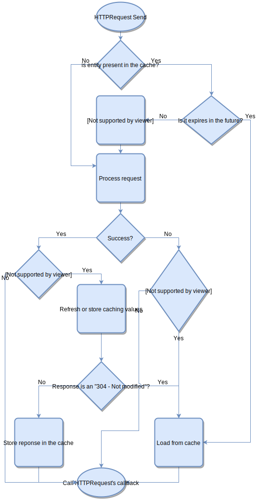

Caching works automatically and without any further setup. The plugin handles the caching headers received from the server in the response and adds additional headers to the request to check the cached content's freshness.
Headers
Caching uses the following headers:
- ETag: When present for a cached entity, the plugin will send out an
If-None-Matchheader with the following request to test the stored entity's freshness. If the server returns with an 304 - Not Modified, the plugin loads the content from the local cache. - Last-Modified: All operations is the same as with the ETag header, but it will send out an
If-Modified-Sinceheader. - Expires: When present for a cached entity and its value is in the future, the plugin loads content from the cache without contacting the server to validate the entity's freshness. When present all previous headers are ignored.
- Cache-Control: When present with the max-age option and the entity's calculated age is less then its max-age, the plugin loads the content from the cache the same way as with the Expires. When present all previous headers are ignored.
Flow-chart about caching:

Disable caching
There's quite a few ways to disable caching. It can be done globally with the BESTHTTP_DISABLE_CACHING define or by setting HTTPManager.IsCachingDisabled to true before any HTTPRequest instantiation:
HTTPManager.IsCachingDisabled = true;
It can be disabled per-request by setting the HTTPRequest's DisableCache property to true:
var request = new HTTPRequest(new Uri("..."), ImageDownloaded);
request.DisableCache = true;
request.Send();
Caching related properties
HTTPRequest:
- DisableCache: With this property caching can be enabled/disabled on a per-request basis.
- CacheOnly: It can be used with streaming. When set to true, no
OnStreamingDataevent is called, the streamed content will be saved straight to the cache if all requirements are met(caching is enabled and there's a caching headers).
HTTPResponse:
- IsFromCache: Indicates that the response body is read from the cache.
- CacheFileInfo: Provides information about the file used for caching the request.
- IsCacheOnly: Determines if this response is only stored to cache. If both
IsCacheOnlyandIsStreamedare true,OnStreamingDataisn't called.
Maintainence
Although caching is automatic we have some control over it, or we can gain some info using the public functions of the HTTPCacheService class:
- BeginClear(): It will start clearing the entire cache on a separate thread.
- BeginMaintainence(): With this function’s help, we can delete cached entries based on the last access time. It deletes entries that’s last access time is older than the specified time. We can also use this function to keep the cache size under control:
// Delete cache entries that weren’t accessed in the last two weeks, then
// delete entries to keep the size of the cache under 50 megabytes, starting with the oldest.
HTTPCacheService.BeginMaintainence(new HTTPCacheMaintananceParams(TimeSpan.FromDays(14), 50 * 1024 * 1024));
- GetCacheSize(): Will return the size of the cache in bytes.
-
GetCacheEntryCount(): Will return the number of the entries stored in the cache. The average cache entry size can be computed with the
float avgSize = GetCacheSize() / (float) GetCacheEntryCount()formula. -
IsDoingMaintainence: Its value is
truewhile the cache service doing any Clear or Maintainence on a separate thread.